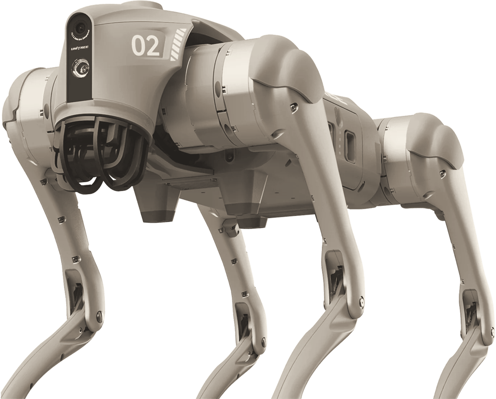

Direzione di marca, territorio B
Misura d'uomo.
Abra misura ogni robot sulle persone che lo useranno, e lo fa vedere. Il marchio è una lettera montata a vista, con il giunto lasciato aperto.
Abra misura ogni robot sulle persone che lo useranno, e lo fa vedere. Il marchio è una lettera montata a vista, con il giunto lasciato aperto.
Chi valuta un robot teme di scoprire tardi cosa farà nel suo reparto. Abra glielo fa vedere prima, e gli lascia in mano un'edizione da tenere con il codice e il manuale del suo caso.
Le prestazioni e i limiti si scrivono con l'unità di misura e con una frase che li porta nella vita di chi legge: 130 cm, all'altezza del petto di un adulto.
Preventivi e manuali hanno copertine a colore pieno per serie, carta avorio e titoli da libro. Sono gli oggetti che restano sulla scrivania del direttore R&D.
I robot dei produttori entrano scontornati e in bicromia calda dentro la composizione delle tre forme. Cambiando marca, l'identità resta.
La a nella forma a doppia pancia è la lettera umanista per eccellenza. Qui è costruita come una piccola macchina: un disco, un arco, un'asta. Dove il disco incontra l'asta resta una finestra. Il segno mostra come è fatto, come il metodo Abra mostra cosa farà il robot.
Geometria: x-height 240 unità, asta 52, pancia di raggio 77 con 4 unità di compensazione sotto la linea di base, spalla di raggio 96 tagliata a 150 gradi. File in logo/, scritti a mano, senza testo.
Il logotipo "abra" è disegnato con le stesse misure: la b e la r usano l'asta e l'arco, la seconda a ripete il giunto. "Robotics" è in Newsreader corsivo, la voce editoriale del sistema.
Prova alle dimensioni reali: logo/test.html. Logo animato: logo/animazione.html.
Il fondo è sempre chiaro. Il rosso Abra è il colore della marca; ocra e verderame lo accompagnano. Il nero non domina mai: l'inchiostro scrive e regge l'asta.
Rapporti d'uso: avorio 55%, inchiostro 15%, rosso 13%, ocra 9%, verderame 5%, servizio 3%. Serie dei materiali: rosso per eventi, verderame per proposte, ocra per consegne e manuali. Contrasti calcolati in palette.md.
Production Type, SIL OFL, Google Fonts. Titoli, testo corrente, didascalie in corsivo. Dimensioni ottiche da 6 a 72 punti.
Hanken Design Co., SIL OFL, Google Fonts. Interfaccia, etichette, tabelle, cifre tabellari con le unità di misura.
Ogni composizione scala il simbolo: un solo grande disco rosso, l'arco ocra, l'asta che fa da pavimento o da bordo. Il robot poggia sulla linea di base. Il giunto resta aperto anche a dieci metri.
Pattern a tessere per interni di flight case, carta da pacchi e storie di servizio. Mai dietro al testo.


Fotografia documentaria a colori nei reparti e nei laboratori italiani, con la luce del posto. Finché non ci sono foto Abra, i robot dei produttori entrano scontornati e in bicromia calda, sulle campiture del marchio.



Segnaposto dichiarati: immagini ufficiali Unitree, scontornate e trattate. Shot list di otto scatti e prompt di mood in foto-video.md.


L'aria da tecnologia d'avanguardia: è un'identità quasi editoriale, scelta per chi decide con un numero e diffida dello spettacolo. E una parte di neutralità: tre colori pieni chiedono proporzioni rispettate.
Le prime foto Abra al lavoro (la consegna del 29 ottobre è l'occasione), il modello HTML del preventivo nel Company Brain con i font incorporati, la scheda limiti del G1 con il protocollo di misura.